Cardiac Arrest on the Dialysis Floor
Cardiac Arrest sa Dialysis Floor
Cardiac Arrest sa Dialysis Floor
Cardiac Arrest king Dialysis Floor
Sudden cardiac death is the single leading cause of death in maintenance hemodialysis patients, and the risk is concentrated around the dialysis session itself — highest in the first hours of treatment and on the first session after the long interdialytic interval. A code in the dialysis unit differs from a hospital ward arrest in three ways: the patient is connected to an extracorporeal blood circuit, hyperkalemia and rapid electrolyte shifts are far more likely as the trigger, and the team is small and must self-organize instantly. Efficiency comes from preparation and rehearsal — not from improvising under pressure.
Ang biglaang cardiac death ang pinakanangungunang sanhi ng kamatayan sa mga maintenance hemodialysis patients, at ang panganib ay nakatuon sa mismong dialysis session — pinakamataas sa unang mga oras ng paggamot at sa unang session matapos ang mahabang pagitan ng dialysis. Ang code sa dialysis unit ay naiiba sa arrest sa ward sa tatlong paraan: nakakabit ang pasyente sa extracorporeal blood circuit, mas malamang na hyperkalemia at mabilis na pagbabago ng electrolytes ang trigger, at maliit ang team at dapat mag-organisa agad. Ang episyensya ay nagmumula sa paghahanda at pagsasanay — hindi sa pag-improvise sa ilalim ng pressure.
Ang kalit nga cardiac death mao ang nag-unang hinungdan sa kamatayon sa mga maintenance hemodialysis patients, ug ang risgo nakapunting sa mismong dialysis session — pinakataas sa unang mga oras sa pagtambal ug sa unang session human sa taas nga gintang sa dialysis. Ang code sa dialysis unit lahi sa arrest sa ward sa tulo ka paagi: nakakabit ang pasyente sa extracorporeal blood circuit, mas posible nga hyperkalemia ug paspas nga pagbalhin sa electrolytes ang trigger, ug gamay ra ang team ug kinahanglan mag-organisa dayon. Ang episyensya gikan sa pagpangandam ug pagbansay — dili sa pag-improvise ubos sa presyur.
Ing biglang cardiac death ya ing pinakamumunang sanhi ning kamatayan king deng maintenance hemodialysis patients, at ing panganib ya nakatuon king mismung dialysis session — pinakamatas king mumunang oras ning lunas at king mumunang session kayari ning makaba a pamitan ning dialysis. Ing code king dialysis unit ya mayayaliwa king arrest king ward king atlung paralan: makakabit ya ing pasyente king extracorporeal blood circuit, mas malagua ya ing hyperkalemia at mabilis na pamagbayu ning electrolytes ing trigger, at malati ya ing team at dapat mag-organisa agad. Ing episyensya manibat ya king pamaglaan at pamagsanay — ali king pag-improvise king lalam ning presyur.
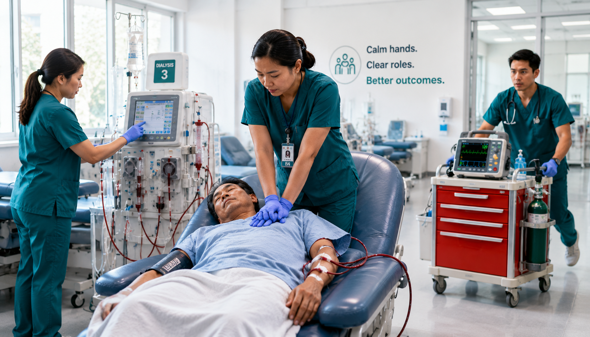
An efficient dialysis code runs on muscle memory: someone starts compressions, someone manages the machine and circuit, someone runs the defibrillator and ACLS drugs, and someone leads and records. Every role is assigned before the day starts — not chosen during the arrest.
Ang episyenteng dialysis code ay umaandar sa muscle memory: may magsisimula ng compressions, may mag-aasikaso ng makina at circuit, may magpapatakbo ng defibrillator at ACLS drugs, at may mamumuno at magtatala. Bawat tungkulin ay nakatalaga bago magsimula ang araw — hindi pinipili habang nag-a-arrest.
Ang episyente nga dialysis code modagan sa muscle memory: naa magsugod og compressions, naa mag-atiman sa makina ug circuit, naa magpadagan sa defibrillator ug ACLS drugs, ug naa manguna ug magrekord. Matag tahas gitudlo sa wala pa magsugod ang adlaw — dili gipili samtang nag-arrest.
Ing episyente a dialysis code ya tatakbo king muscle memory: atin magumpisa ning compressions, atin mag-asikaso ning makina at circuit, atin magpatakbo ning defibrillator at ACLS drugs, at atin mamuno at magtala. Balang tungkulin ya nakatalaga bayu magumpisa ing aldo — ali pipiliin kayabe ning arrest.
Unit Readiness: The Code Is Won Before It Starts
Kahandaan ng Unit: Ang Code ay Napapanalo Bago Pa Magsimula
Kaandam sa Unit: Ang Code Madaog Sa Wala Pa Magsugod
Kahandaan ning Unit: Ing Code ya Mapanalu Bayu Pa Magumpisa
The most efficient codes are the most boring ones — because everything needed is already in place. Build these four pillars of readiness into the daily rhythm of the unit.
Ang pinaka-episyenteng code ay ang pinaka-nakakabagot — dahil nakahanda na ang lahat ng kailangan. Itanim ang apat na haligi ng kahandaan sa pang-araw-araw na takbo ng unit.
Ang pinaka-episyente nga code mao ang pinaka-makalaay — kay andam na ang tanan nga gikinahanglan. Itanom kining upat ka haligi sa kaandam sa adlaw-adlaw nga dagan sa unit.
Ing pinaka-episyente a code ya ing pinaka-makapagsawa — uli nakahanda na ngan ing sablang kailangan. Itanam ing apat a haligi ning kahandaan king aldo-aldo a takbu ning unit.
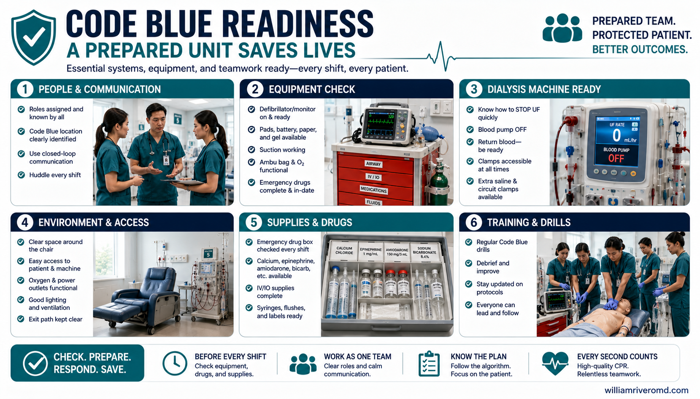
The four pillars of unit readiness — a checked crash cart, pre-assigned roles, regular mock codes with current BLS/ACLS, and low-potassium dialysate within reach.
1. A checked crash cart
1. Na-tsek na crash cart
1. Na-check nga crash cart
1. Tselek a crash cart
A defibrillator (or AED) tested daily, a bag-valve-mask and oxygen, airway adjuncts and suction, and a sealed drug tray with epinephrine, amiodarone, calcium, insulin, dextrose, sodium bicarbonate, and atropine. Calcium and the hyperkalemia kit must be findable in seconds — not buried.
Defibrillator (o AED) na sinusubok araw-araw, bag-valve-mask at oxygen, airway adjuncts at suction, at naka-seal na drug tray na may epinephrine, amiodarone, calcium, insulin, dextrose, sodium bicarbonate, at atropine. Ang calcium at hyperkalemia kit ay dapat makita sa ilang segundo — hindi nakatago.
Defibrillator (o AED) nga gisulayan kada adlaw, bag-valve-mask ug oxygen, airway adjuncts ug suction, ug sealed nga drug tray nga adunay epinephrine, amiodarone, calcium, insulin, dextrose, sodium bicarbonate, ug atropine. Ang calcium ug hyperkalemia kit kinahanglan makita sulod sa pipila ka segundo — dili tago.
Defibrillator (o AED) a sususbukan aldo-aldo, bag-valve-mask at oxygen, airway adjuncts at suction, at naka-seal a drug tray a atin epinephrine, amiodarone, calcium, insulin, dextrose, sodium bicarbonate, at atropine. Ing calcium at hyperkalemia kit dapat akakit king pilang segundo — ali makasalikut.
2. Pre-assigned roles
2. Naka-takdang tungkulin
2. Pre-assigned nga tahas
2. Nakatalaga a tungkulin
Every shift, name in advance who leads, who compresses first, who handles the machine, who draws and pushes drugs, and who records and times. A laminated role card at the nurses' station removes the freeze of "who does what" in the first 30 seconds.
Bawat shift, pangalanan nang maaga kung sino ang mamumuno, sino ang unang mag-compress, sino ang mag-asikaso ng makina, sino ang maghahanda at magtutulak ng gamot, at sino ang magtatala at magtitiyempo. Ang naka-laminate na role card sa nurses' station ay nag-aalis ng pagka-freeze sa "sino ang gagawa" sa unang 30 segundo.
Kada shift, hinganli nang sayo kinsa ang manguna, kinsa ang unang mo-compress, kinsa ang mo-atiman sa makina, kinsa ang mag-andam ug motulod sa tambal, ug kinsa ang magrekord ug magtiyempo. Ang laminated nga role card sa nurses' station mowala sa pagka-freeze sa "kinsa ang mobuhat" sa unang 30 segundo.
Balang shift, panyalan nang maranan ninu ing mamuno, ninu ing mumunang mag-compress, ninu ing mag-asikaso ning makina, ninu ing maghanda at magtulak ning gamut, at ninu ing magtala at magtiyempo. Ing naka-laminate a role card king nurses' station ya mialis king pagka-freeze king "ninu ing gagawa" king mumunang 30 segundo.
3. Mock codes & certification
3. Mock codes at sertipikasyon
3. Mock codes ug sertipikasyon
3. Mock codes at sertipikasyon
Current BLS for every staff member and ACLS for at least one provider per shift. Run an unannounced mock code at the dialysis chair quarterly — practising the circuit steps, not just CPR — and debrief honestly. Skills decay fast without rehearsal.
Kasalukuyang BLS para sa bawat staff at ACLS para sa kahit isang provider kada shift. Magsagawa ng hindi inaanunsyong mock code sa dialysis chair kada quarter — sanayin ang mga hakbang sa circuit, hindi lang CPR — at mag-debrief nang tapat. Mabilis kumupas ang kasanayan kapag walang pagsasanay.
Kasamtangan nga BLS para sa matag staff ug ACLS para sa labing menos usa ka provider kada shift. Pagbuhat og wala gipahibalo nga mock code sa dialysis chair kada quarter — bansaya ang mga lakang sa circuit, dili lang CPR — ug mag-debrief nga matinud-anon. Paspas mawala ang kahanas kung walay pagbansay.
Kasalukuyan a BLS para king balang staff at ACLS para king kahit metung a provider kada shift. Magdaraptan na ali sinabing mock code king dialysis chair kada quarter — sanayan ing deng lakang king circuit, ali mu CPR — at mag-debrief a tapat. Mabilis ya makupas ing kasanayan nung alang pamagsanay.
4. Low-K dialysate within reach
4. Low-K dialysate na maabot
4. Low-K dialysate nga maabot
4. Low-K dialysate a maabut
Because hyperkalemia is the prime reversible cause here, the unit should know exactly how to set up a low-potassium bath (e.g. 2.0 mEq/L) quickly for emergency dialysis once the airway and circulation are secured. Know where the concentrate and a spare machine are.
Dahil ang hyperkalemia ang pangunahing reversible cause dito, dapat alam ng unit kung paano mag-set up ng low-potassium bath (hal. 2.0 mEq/L) nang mabilis para sa emergency dialysis kapag na-secure na ang airway at sirkulasyon. Alamin kung nasaan ang concentrate at backup machine.
Tungod kay ang hyperkalemia mao ang nag-unang reversible cause dinhi, kinahanglan kabalo ang unit kon unsaon pag-set up og low-potassium bath (pananglitan 2.0 mEq/L) dayon para sa emergency dialysis kung na-secure na ang airway ug sirkulasyon. Hibal-i asa ang concentrate ug spare machine.
Uli ing hyperkalemia ing pangunang reversible cause keni, dapat balu ning unit nung makananu mag-set up ning low-potassium bath (alimbawa 2.0 mEq/L) a mabilis para king emergency dialysis nung na-secure na ing airway at sirkulasyon. Balu yu nung nokarin ing concentrate at spare machine.
Crash-cart checklist — verify and sign every shift
Crash-cart checklist — tsek at lagdaan bawat shift
Crash-cart checklist — check ug pirmahi kada shift
Crash-cart checklist — tselek at lagdaan balang shift
Defibrillator self-test passed · pads/paddles + gel present · BVM + masks (adult) · O₂ tank full + tubing · suction working · oral/nasal airways · IV start kit + saline flushes · ampules: epinephrine, amiodarone, calcium gluconate & chloride, regular insulin + D50, sodium bicarbonate, atropine, magnesium · sharps container · backup gloves · documentation/code sheet + working clock.
Defibrillator self-test pasado · pads/paddles + gel · BVM + masks (adult) · puno ang O₂ tank + tubing · gumagana ang suction · oral/nasal airways · IV start kit + saline flushes · ampules: epinephrine, amiodarone, calcium gluconate at chloride, regular insulin + D50, sodium bicarbonate, atropine, magnesium · sharps container · backup gloves · code sheet + gumaganang orasan.
Defibrillator self-test pasado · pads/paddles + gel · BVM + masks (adult) · puno ang O₂ tank + tubing · molihok ang suction · oral/nasal airways · IV start kit + saline flushes · ampules: epinephrine, amiodarone, calcium gluconate ug chloride, regular insulin + D50, sodium bicarbonate, atropine, magnesium · sharps container · backup gloves · code sheet + molihok nga relo.
Defibrillator self-test pasa · pads/paddles + gel · BVM + masks (adult) · mitmu ing O₂ tank + tubing · tatakbu ing suction · oral/nasal airways · IV start kit + saline flushes · ampules: epinephrine, amiodarone, calcium gluconate at chloride, regular insulin + D50, sodium bicarbonate, atropine, magnesium · sharps container · backup gloves · code sheet + tatakbung orasan.
Recognition and Calling the Code
Pagkilala at Pagtawag ng Code
Pag-ila ug Pagtawag sa Code
Pamikilala at Pamagtawag ning Code
On the dialysis floor, the warning often comes during the session as the patient becomes unresponsive, slumps, or has an unrecordable blood pressure. Treat any unresponsive dialysis patient as a potential arrest until proven otherwise.
Sa dialysis floor, kadalasang dumarating ang babala habang nasa session — nawawalan ng malay ang pasyente, nakayuko, o hindi mabasa ang blood pressure. Ituring ang sinumang hindi tumutugong dialysis patient bilang posibleng arrest hangga't hindi napapatunayang hindi.
Sa dialysis floor, kasagaran moabot ang pasidaan atol sa session — mawad-an og panimuot ang pasyente, motakilid, o dili mabasa ang blood pressure. Isipa ang bisan kinsa nga dili motubag nga dialysis patient nga posibleng arrest hangtod mapamatud-an nga dili.
King dialysis floor, kalaganasan datang ing babala kayabe ning session — mawala ya ing malay ning pasyente, mayuku, o ali mababasa ing blood pressure. Ituring ye ing ninumang ali tutugun a dialysis patient bilang posibleng arrest anggang ali mapatunayan a ali.
Check responsiveness and breathing
Suriin ang pagtugon at paghinga
Susiha ang pagtubag ug pagginhawa
Suriin ing pamagtugun at pamaginawa
Shout and tap. Look for normal breathing and check a central (carotid) pulse for no more than 10 seconds. Agonal gasping is not breathing.
Sumigaw at tapikin. Tingnan ang normal na paghinga at suriin ang carotid pulse nang hindi hihigit sa 10 segundo. Ang agonal gasping ay hindi paghinga.
Singgit ug tapika. Tan-awa ang normal nga pagginhawa ug susiha ang carotid pulse nga dili molapas sa 10 segundo. Ang agonal gasping dili pagginhawa.
Maglagasak at tapikan. Lawan ing normal a pamaginawa at suriin ing carotid pulse a ali lalampas king 10 segundo. Ing agonal gasping ali ya pamaginawa.
Call the code — loudly and specifically
Tawagin ang code — malakas at tiyak
Tawga ang code — kusog ug klaro
Tawagan ing code — masikan at tiyak
Activate the unit's code call (overhead, alarm, or phone) and state the chair/station number. Send someone for the crash cart and defibrillator. Note the time.
I-activate ang code call ng unit (overhead, alarm, o telepono) at sabihin ang numero ng chair/station. Magpadala ng kukuha ng crash cart at defibrillator. Itala ang oras.
I-activate ang code call sa unit (overhead, alarm, o telepono) ug isulti ang numero sa chair/station. Pagpadala og mokuha sa crash cart ug defibrillator. Itala ang oras.
I-activate ya ing code call ning unit (overhead, alarm, o telepono) at sabian ing numeru ning chair/station. Magpadala kang kuma king crash cart at defibrillator. Itala ya ing oras.
No pulse → start CPR and manage the circuit
Walang pulso → simulan ang CPR at asikasuhin ang circuit
Walay pulso → sugdi ang CPR ug atimana ang circuit
Alang pulso → umpisan ing CPR at asikasuan ing circuit
If there is no pulse, do not delay. Begin high-quality compressions immediately and simultaneously address the dialysis machine (next section).
Kung walang pulso, huwag mag-antala. Magsimula agad ng high-quality compressions at sabay na asikasuhin ang dialysis machine (susunod na seksyon).
Kung walay pulso, ayaw paglangan. Sugdi dayon ang high-quality compressions ug dungan nga atimana ang dialysis machine (sunod nga seksyon).
Nung alang pulso, eka maglawe. Umpisan agad ing high-quality compressions at sabay nang asikasuan ing dialysis machine (tutuking seksyon).
Compressions, the Circuit, and the First Shock
Compressions, ang Circuit, at ang Unang Shock
Compressions, ang Circuit, ug ang Unang Shock
Compressions, ing Circuit, at ing Mumunang Shock
The defining skill of a dialysis code is managing high-quality CPR and the extracorporeal circuit at the same time. Compressions never wait for the machine.
Ang natatanging kasanayan sa dialysis code ay ang pamamahala ng high-quality CPR at ng extracorporeal circuit nang sabay. Hindi naghihintay ang compressions sa makina.
Ang nag-ilis nga kahanas sa dialysis code mao ang pagdumala sa high-quality CPR ug sa extracorporeal circuit nga dungan. Dili maghulat ang compressions sa makina.
Ing pangmakanyang kasanayan king dialysis code ya ing pamanibala ning high-quality CPR at ning extracorporeal circuit a sabay. Ali ya maghintay ing compressions king makina.
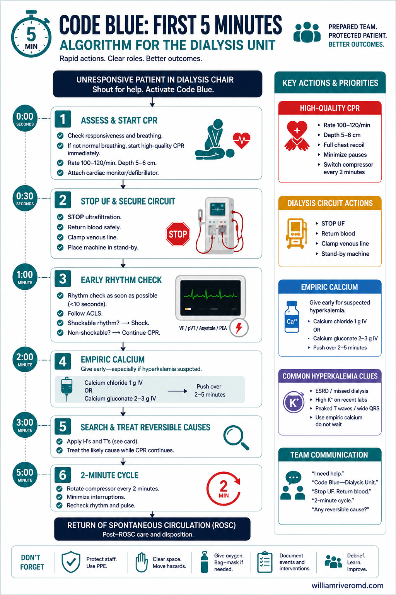
The first five minutes run two lanes in parallel — high-quality CPR and circuit management (stop ultrafiltration, saline, return or clamp while keeping access) — converging on rhythm analysis and the first shock.
The circuit, in order: STOP UF → decide return vs clamp → keep access for drugs
Ang circuit, sunud-sunod: ITIGIL ang UF → magdesisyon return o clamp → panatilihin ang access para sa gamot
Ang circuit, sunod-sunod: HUNONGA ang UF → magdesisyon return o clamp → ampingi ang access para sa tambal
Ing circuit, sunud-sunud: PATUGTAN ing UF → magdesisyon return o clamp → ingatan ing access para king gamut
- Stop ultrafiltration immediately and set the machine to minimal/zero UF — ongoing fluid removal worsens hypovolemia and arrest.
- Itigil agad ang ultrafiltration at i-set ang makina sa minimal/zero UF — pinalalala ng patuloy na pag-alis ng fluid ang hypovolemia at arrest.
- Hunonga dayon ang ultrafiltration ug i-set ang makina sa minimal/zero UF — pasamot sa hypovolemia ug arrest ang padayon nga pagkuha sa fluid.
- Patugtan agad ing ultrafiltration at i-set ing makina king minimal/zero UF — palalan ning patuluy a pamayalis ning fluid ing hypovolemia at arrest.
- Give a normal saline bolus via the circuit (e.g. 200–500 mL) to restore volume while compressions continue.
- Magbigay ng normal saline bolus sa circuit (hal. 200–500 mL) para ibalik ang volume habang nagpapatuloy ang compressions.
- Paghatag og normal saline bolus sa circuit (pananglitan 200–500 mL) aron mabalik ang volume samtang nagpadayon ang compressions.
- Magbie ning normal saline bolus king circuit (alimbawa 200–500 mL) para ibalik ing volume kayabe ning compressions.
- Decide: return blood or clamp. If a trained nurse can rinse blood back quickly, do so; if not, clamp the lines and disconnect so resuscitation is unimpeded. Either way, keep vascular access for drug delivery.
- Magdesisyon: i-return ang dugo o i-clamp. Kung may sanay na nurse na mabilis makakapag-rinse back ng dugo, gawin; kung wala, i-clamp ang mga linya at i-disconnect para hindi maabala ang resuscitation. Anuman, panatilihin ang vascular access para sa gamot.
- Magdesisyon: i-return ang dugo o i-clamp. Kung adunay bansay nga nurse nga makapa-rinse back dayon sa dugo, buhata; kung wala, i-clamp ang mga linya ug i-disconnect aron dili maulang ang resuscitation. Bisan asa, ampingi ang vascular access para sa tambal.
- Magdesisyon: i-return ing daya o i-clamp. Nung atin sanay a nurse a mabilis makapag-rinse back ning daya, daptan; nung ala, i-clamp ing deng linya at i-disconnect para ali maabala ing resuscitation. Nanuman, ingatan ing vascular access para king gamut.
High-quality CPR — the non-negotiables
High-quality CPR — ang hindi pwedeng ikompromiso
High-quality CPR — ang dili pwede ikompromiso
High-quality CPR — ing ali pwedeng ikompromiso
| Parameter | Target | Why it matters |
|---|---|---|
| Rate | 100–120 / min | Faster or slower both reduce coronary perfusion |
| Depth (adult) | 5–6 cm (2–2.4 in) | Shallow compressions do not generate flow |
| Recoil | Full chest recoil | Allows the heart to refill between compressions |
| Interruptions | <10 seconds | Minimize pauses; resume immediately after shock |
| Compressor swap | Every 2 minutes | Fatigue silently degrades depth and rate |
| Ventilation | 30:2, or 1 breath / 6 s with advanced airway | Avoid over-ventilation; watch chest rise |
Defibrillating safely around the machine
Ligtas na defibrillation malapit sa makina
Luwas nga defibrillation duol sa makina
Ligtas a defibrillation malapit king makina
Attach the defibrillator as soon as it arrives and analyze the rhythm. For a shockable rhythm (VF/pulseless VT), shock without delay. Ensure no one is touching the patient, the bloodlines, or the metal machine frame when the shock is delivered; place pads clear of the access site and any wet field. Resume compressions immediately after the shock — do not pause to recheck a pulse.
Ikabit ang defibrillator pagdating at suriin ang ritmo. Para sa shockable rhythm (VF/pulseless VT), mag-shock agad. Tiyaking walang humahawak sa pasyente, sa bloodlines, o sa metal na frame ng makina kapag nag-shock; ilagay ang pads malayo sa access site at sa anumang basang bahagi. Ituloy agad ang compressions matapos ang shock — huwag huminto para mag-recheck ng pulso.
Ikabit ang defibrillator pag-abot ug susiha ang ritmo. Para sa shockable rhythm (VF/pulseless VT), pag-shock dayon. Siguroha nga walay mokupot sa pasyente, sa bloodlines, o sa metal nga frame sa makina kung mag-shock; ibutang ang pads layo sa access site ug sa basa nga bahin. Ipadayon dayon ang compressions human sa shock — ayaw paghunong aron mo-recheck og pulso.
Ikabit ya ing defibrillator pamadatang at suriin ing ritmo. Para king shockable rhythm (VF/pulseless VT), mag-shock agad. Tiyakan a alang kakatnan king pasyente, king bloodlines, o king metal a frame ning makina nung mag-shock; ilage ya ing pads marayu king access site at king nanumang basang parti. Ituluy agad ing compressions kayari ning shock — eka tumigil para mag-recheck ning pulso.

Defibrillate safely around the machine: pads clear of the access site and any wet field, no one touching the patient, bloodlines, or metal frame at the shock, then resume compressions immediately.
Running the ACLS Algorithm in Dialysis
Pagpapatakbo ng ACLS Algorithm sa Dialysis
Pagpadagan sa ACLS Algorithm sa Dialysis
Pamagpatakbo ning ACLS Algorithm king Dialysis
The standard adult cardiac arrest algorithm applies — with one dialysis-specific emphasis: treat hyperkalemia empirically and early. Identify the rhythm as shockable (VF/pVT) or non-shockable (asystole/PEA) and follow the two-minute cycle.
Naaangkop ang standard adult cardiac arrest algorithm — may isang dialysis-specific na diin: gamutin ang hyperkalemia nang empirically at maaga. Tukuyin ang ritmo bilang shockable (VF/pVT) o non-shockable (asystole/PEA) at sundin ang two-minute cycle.
Mogamit ang standard adult cardiac arrest algorithm — adunay usa ka dialysis-specific nga pagpasiugda: tambali ang hyperkalemia nga empirically ug sayo. Ilha ang ritmo nga shockable (VF/pVT) o non-shockable (asystole/PEA) ug sunda ang two-minute cycle.
Maugnay ya ing standard adult cardiac arrest algorithm — atin metung a dialysis-specific a diin: lunasan ing hyperkalemia a empirically at maranan. Kilalan ing ritmo bilang shockable (VF/pVT) o non-shockable (asystole/PEA) at tuki ing two-minute cycle.
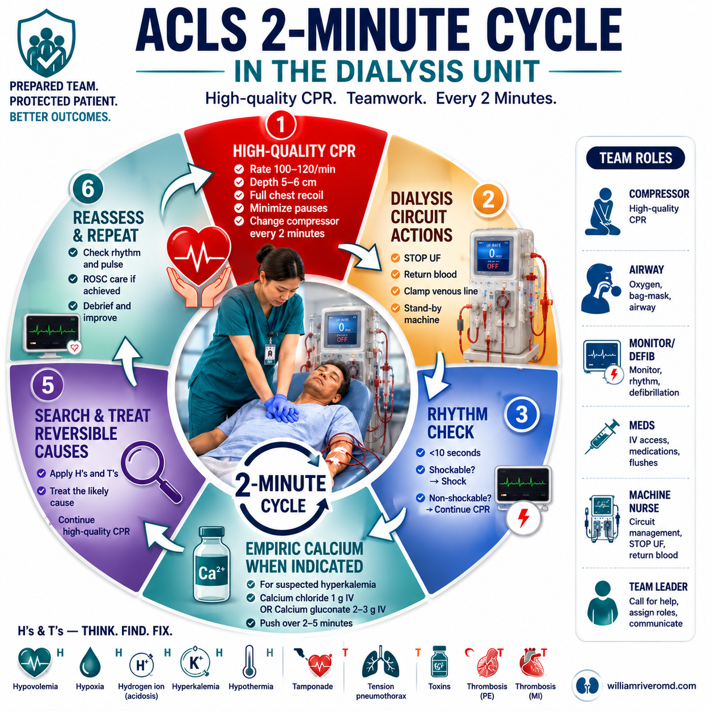
The tight two-minute ACLS cycle — CPR, rhythm and pulse check, shock if shockable, drug plus compressor swap, then reassess reversible causes — keeping hyperkalemia front of mind.
| Drug | Dose | When / Notes |
|---|---|---|
| Epinephrine | 1 mg IV/IO every 3–5 min | Give ASAP in non-shockable rhythms; after 2nd shock in shockable rhythms |
| Amiodarone | 300 mg IV/IO, then 150 mg | For refractory VF/pVT (after epinephrine + shock). Lidocaine is an alternative |
| Calcium gluconate 10% | 1–2 g (10–20 mL) IV/IO, slow | Empiric in dialysis arrest — membrane stabilization for suspected hyperkalemia/hypocalcemia. Often the only calcium stocked in the dialysis unit; safe peripherally. Calcium chloride 10% 1 g (10 mL) is an alternative if available (3× more elemental calcium; give via central/IO — caustic peripherally) |
| Sodium bicarbonate | 1 mEq/kg IV/IO | Severe hyperkalemia or known/profound acidosis; do not give in same line as calcium |
| Magnesium sulfate | 1–2 g IV/IO | Only for torsades de pointes / known hypomagnesemia |
| Insulin + dextrose | 10 U regular + 25 g D50 | Shifts potassium intracellularly — part of hyperkalemia bundle (monitor glucose) |
The 2-minute cycle
Ang 2-minutong siklo
Ang 2-minuto nga siklo
Ing 2-minutong siklo
CPR for 2 minutes → rhythm/pulse check → shock if shockable → resume CPR and give the next drug → swap compressor → reassess reversible causes. Keep the cycle tight, the timer audible, and the access patent for every drug push.
CPR ng 2 minuto → tsek ng ritmo/pulso → mag-shock kung shockable → ituloy ang CPR at ibigay ang susunod na gamot → magpalit ng compressor → suriing muli ang reversible causes. Panatilihing mahigpit ang siklo, naririnig ang timer, at bukas ang access para sa bawat gamot.
CPR og 2 minuto → check sa ritmo/pulso → mag-shock kung shockable → ipadayon ang CPR ug ihatag ang sunod nga tambal → mag-ilis og compressor → susiha pag-usab ang reversible causes. Hupti nga hugot ang siklo, madungog ang timer, ug abli ang access para sa matag tambal.
CPR ning 2 minuto → tselek ning ritmo/pulso → mag-shock nung shockable → ituluy ing CPR at ibie ing tutuking gamut → magsalili ning compressor → suriin pasibayu ing reversible causes. Ingatan a masikip ing siklo, marimdam ing timer, at makabuklat ing access para king balang gamut.
Reference: ACLS Cardiac Rhythm Recognition & Management Cheat Sheet
Sanggunian: ACLS Cardiac Rhythm Recognition & Management Cheat Sheet
Reperensya: ACLS Cardiac Rhythm Recognition & Management Cheat Sheet
Reperensya: ACLS Cardiac Rhythm Recognition & Management Cheat Sheet
A separate printable reference covers the full rhythm spectrum — sinus, atrial, junctional, every AV block, and the ventricular and arrest rhythms (shockable vs non-shockable) — each with a strip, a recognition cue, and first-line management, plus the dialysis hyperkalemia ECG. Download the Rhythm Recognition Cheat Sheet (PDF) →
May hiwalay na nape-print na sanggunian para sa buong saklaw ng ritmo — sinus, atrial, junctional, bawat AV block, at ang ventricular at arrest na ritmo (shockable vs non-shockable) — bawat isa ay may strip, recognition cue, at ang hyperkalemia ECG sa dialysis. I-download ang Rhythm Recognition Cheat Sheet (PDF) →
Adunay separadong ma-print nga reperensya alang sa tibuok rhythm — sinus, atrial, junctional, matag AV block, ug ang ventricular ug arrest nga rhythm (shockable vs non-shockable) — matag usa adunay strip, recognition cue, ug ang hyperkalemia ECG sa dialysis. I-download ang Rhythm Recognition Cheat Sheet (PDF) →
Atin hiwalay a maprint a reperensya para king mabuong saklaw ning ritmo — sinus, atrial, junctional, balang AV block, at ing ventricular at arrest a ritmo (shockable vs non-shockable) — balang metung atin strip, recognition cue, at ing hyperkalemia ECG king dialysis. I-download ing Rhythm Recognition Cheat Sheet (PDF) →
Hyperkalemic Arrest: Treat It Empirically
Hyperkalemic Arrest: Gamutin Agad nang Empirically
Hyperkalemic Arrest: Tambali Dayon nga Empirically
Hyperkalemic Arrest: Lunasan Agad a Empirically
In a patient who missed sessions, presents on a Monday after the long weekend gap, or had a low-yield treatment, assume hyperkalemia is the cause until proven otherwise. Do not wait for a lab result — start the bundle during CPR. Calcium protects the myocardium within minutes; the shift agents buy time; dialysis is the only definitive removal.
Sa pasyenteng nakaligtaan ang mga session, dumating sa Lunes matapos ang mahabang weekend gap, o kulang ang naging treatment, ipagpalagay na hyperkalemia ang sanhi hangga't hindi napapatunayang hindi. Huwag hintayin ang lab result — simulan ang bundle habang nag-CPR. Pinoprotektahan ng calcium ang myocardium sa loob ng ilang minuto; ang mga shift agent ay nagbibigay ng oras; ang dialysis lang ang tunay na nag-aalis nito.
Sa pasyente nga nakalimtan ang mga session, miabot sa Lunes human sa taas nga weekend gap, o kulang ang treatment, hunahunaa nga hyperkalemia ang hinungdan hangtod mapamatud-an nga dili. Ayaw hulata ang lab result — sugdi ang bundle samtang nag-CPR. Ang calcium manalipod sa myocardium sulod sa pipila ka minuto; ang shift agents mohatag og panahon; ang dialysis lang ang tinuod nga mokuha niini.
King pasyenteng nakalingwan ing deng session, dinatang king Lunes kayari ning makaba a weekend gap, o kulang ing miging treatment, isipan a hyperkalemia ing sanhi anggang ali mapatunayan a ali. Eka antayan ing lab result — umpisan ing bundle kayabe ning CPR. Pipanalipdan ning calcium ing myocardium king loob ning pilang minutu; ing deng shift agent magbie lang oras; ing dialysis mu ing tutu a mag-alis kaniti.
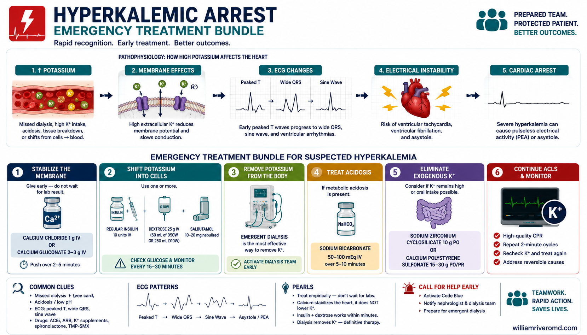
The hyperkalemic-arrest bundle in sequence — stabilize with calcium gluconate, shift potassium into cells, and remove it with emergency dialysis against a low-potassium bath.
| Step | Agent & dose | Onset | Effect |
|---|---|---|---|
| 1 · Stabilize | Calcium gluconate 10% 1–2 g IV (or calcium chloride 1 g if available) | 1–3 min | Membrane stabilization — protects the heart; does not lower K⁺. Gluconate is safe peripherally and is usually what the unit stocks |
| 2 · Shift | Regular insulin 10 U + D50 25 g IV | 10–20 min | Drives K⁺ into cells (monitor for hypoglycemia) |
| 2 · Shift | Nebulized salbutamol 10–20 mg | 15–30 min | Additive intracellular shift |
| 2 · Shift | Sodium bicarbonate (if acidotic) | 15–30 min | Adjunct only; separate line from calcium |
| 3 · Remove | Emergency hemodialysis, low-K bath (≈2.0 mEq/L) | Definitive | Only true potassium removal — arrange in parallel |
Calcium and bicarbonate must not mix in the same line
Hindi dapat maghalo ang calcium at bicarbonate sa iisang linya
Dili angay magsagol ang calcium ug bicarbonate sa usa ka linya
Ali dapat masalu ing calcium at bicarbonate king metung a linya
They precipitate as calcium carbonate. Use separate lines or flush thoroughly between them. And remember: in a hyperkalemic arrest, resuming or starting dialysis against a low-potassium bath is the definitive treatment — mobilize a machine and concentrate early, not after ROSC.
Nagiging calcium carbonate ang mga ito. Gumamit ng magkahiwalay na linya o mag-flush nang husto sa pagitan. At tandaan: sa hyperkalemic arrest, ang pagpapatuloy o pagsisimula ng dialysis laban sa low-potassium bath ang tunay na lunas — maghanda ng makina at concentrate nang maaga, hindi matapos ang ROSC.
Mahimo silang calcium carbonate. Gamit og bulag nga linya o mag-flush og maayo sa taliwala. Ug hinumdomi: sa hyperkalemic arrest, ang pagpadayon o pagsugod sa dialysis batok sa low-potassium bath mao ang tinuod nga tambal — pangandama og makina ug concentrate sa sayo, dili human sa ROSC.
Maging calcium carbonate la deti. Gumamit kang misalili a linya o mag-flush a maus king pilatan. At tandanan: king hyperkalemic arrest, ing pamagpatuluy o pamagumpisa ning dialysis laban king low-potassium bath ing tutu a lunas — maghanda kang makina at concentrate a maranan, ali kayari ning ROSC.
Post-Dialysis Rebound Pulmonary Congestion
Post-Dialysis Rebound Pulmonary Congestion (Pagbalik ng Pamamaga sa Baga Pagkatapos ng Dialysis)
Post-Dialysis Rebound Pulmonary Congestion (Pagbalik sa Tubig sa Baga Human sa Dialysis)
Post-Dialysis Rebound Pulmonary Congestion (Pamibalik ning Tubig king Baga Kayari ning Dialysis)
A patient can leave the unit at "dry weight" and breathing comfortably, then return within hours — or collapse at home — in flash pulmonary edema. Once ultrafiltration stops, fluid keeps shifting from the tissues back into the bloodstream (plasma refilling), water left behind in the lungs has nowhere to go, and a stiff or weakened heart cannot accommodate it. Because most dialysis patients pass little or no urine, diuretics rarely help — the definitive treatment is to remove fluid again. Catching this rebound early prevents a respiratory code.
Maaaring umalis ang pasyente sa unit na nasa "dry weight" at maayos ang paghinga, tapos bumalik sa loob ng ilang oras — o bumagsak sa bahay — na may flash pulmonary edema (biglaang pamamaga ng baga). Kapag huminto na ang ultrafiltration, patuloy na lumilipat ang likido mula sa mga tisyu pabalik sa dugo (plasma refilling), walang mapupuntahan ang tubig na naiwan sa baga, at hindi ito kaya ng matigas o mahinang puso. Dahil kakaunti o walang ihi ang karamihan ng pasyenteng nagda-dialysis, bihirang makatulong ang diuretics — ang tunay na lunas ay alisin muli ang likido. Ang maagang pagtukoy sa rebound na ito ay pumipigil sa respiratory code.
Mahimong mobiya ang pasyente sa unit nga naa sa "dry weight" ug hayahay ang pagginhawa, dayon mobalik sulod sa pipila ka oras — o matumba sa balay — nga adunay flash pulmonary edema (kalit nga paghubag sa baga). Kung mohunong na ang ultrafiltration, padayon nga mobalhin ang tubig gikan sa mga tisyu balik sa dugo (plasma refilling), walay kaadtoan ang tubig nga nahabilin sa baga, ug dili kini kaya sa gahi o luya nga kasingkasing. Tungod kay gamay ra o walay ihi ang kadaghanan sa mga pasyente sa dialysis, panagsa ra makatabang ang diuretics — ang tinuod nga tambal mao ang pagkuha pag-usab sa tubig. Ang sayo nga pag-ila niini makalikay sa respiratory code.
Malyaring mako ya ing pasyente king unit a atyu king "dry weight" at maus ya ing pamaginawa, tapos mibalik king loob ning pilang oras — o mibaldug king bale — a atin flash pulmonary edema (biglang pamaga ning baga). Nung tumigil na ing ultrafiltration, tuluy-tuluy a lumipat ing danum manibat king deng tisyu pabalik king daya (plasma refilling), alang paintungulan ing danum a mitagan king baga, at ali ya kaya ning matigas o maina a pusu. Uli kakaunti o alang mih ing kalakhan ning deng pasyenteng nagda-dialysis, malagad makatulung ing diuretics — ing tutu a lunas ya ing alisan pasibayu ing danum. Ing maranan a pamikilala kaniti ya pipigil king respiratory code.
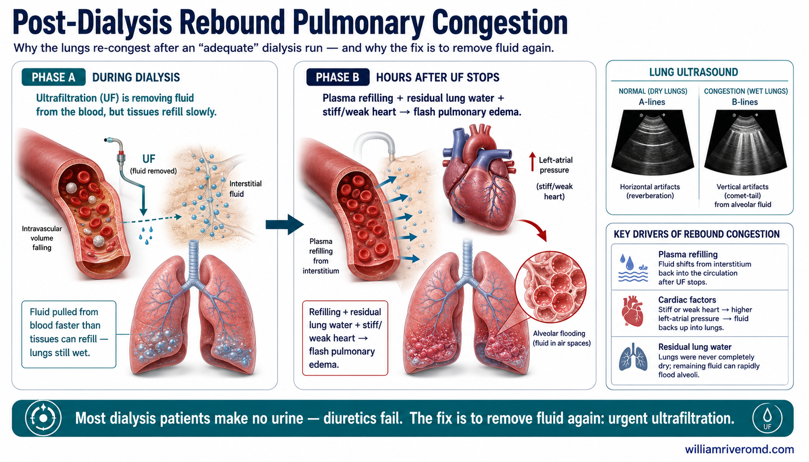
During dialysis, ultrafiltration pulls fluid from the blood faster than the tissues can refill. After UF stops, plasma refilling, residual lung water, and a stiff or weak heart flood the alveoli — flash pulmonary edema. Because most dialysis patients make no urine, the fix is to remove fluid again (urgent ultrafiltration), not diuretics.
Why the lungs re-congest after an "adequate" session
Bakit muling namamaga ang baga matapos ang "sapat" na session
Ngano mobalik ang tubig sa baga human sa "igo" nga session
Bakit mibalik ya ing pamaga ning baga kayari ning "sapat" a session
Plasma refilling & redistribution
Plasma refilling at redistribution
Plasma refilling ug redistribution
Plasma refilling at redistribution
During HD, fluid is pulled from the vascular space faster than the interstitium can refill it. When UF stops, refilling continues and re-expands the circulating volume. Lung water lags behind body weight — a patient at "dry weight" on the scale can still have wet lungs.
The stunned, stiff heart
Ang na-stun, matigas na puso
Ang na-stun, gahi nga kasingkasing
Ing na-stun, matigas a pusu
Aggressive UF and intradialytic hypotension cause myocardial stunning and diastolic dysfunction. A heart with low EF or HFpEF cannot handle the refilling volume — left-atrial pressure rises and fluid floods the alveoli.
Sodium & intake reload
Sodium at intake reload
Sodium ug intake reload
Sodium at intake reload
High dialysate sodium, eating or drinking around the session, and large interdialytic weight gain reload volume quickly — sometimes within the same evening.
Hidden lung water (B-lines)
Nakatagong tubig sa baga (B-lines)
Tagong tubig sa baga (B-lines)
Makasalikut a danum king baga (B-lines)
Lung ultrasound B-lines (extravascular lung water) often persist or rebound after HD even when the patient looks euvolemic. Clinical exam and the scale underestimate congestion — point-of-care lung ultrasound reveals it.
Recognize it before it becomes a respiratory code
Kilalanin ito bago maging respiratory code
Ilha kini sa dili pa mahimong respiratory code
Kilalan ye bayu maging respiratory code
Watch for progressive breathlessness, inability to lie flat, a night-time cough, and a falling SpO₂ in the hours after dialysis; on exam — bilateral crackles, a raised JVP, and, in severe cases, pink frothy sputum. This is congestion, not the hypovolemia of intradialytic hypotension. A bedside lung ultrasound showing multiple bilateral B-lines confirms extravascular lung water.
Bantayan ang lumalalang hirap sa paghinga, hindi makahiga nang patag, ubo sa gabi, at bumababang SpO₂ sa mga oras matapos ang dialysis; sa eksaminasyon — crackles sa magkabilang baga, mataas na JVP, at sa malubhang kaso, kulay-rosas na mabulang plema. Ito ay congestion, hindi ang hypovolemia ng intradialytic hypotension. Pinatutunayan ito ng bedside lung ultrasound na nagpapakita ng maraming B-lines sa magkabilang baga.
Bantayi ang nagkagrabe nga kalisud sa pagginhawa, dili makahigda nga patag, ubo sa gabii, ug nagkaubos nga SpO₂ sa mga oras human sa dialysis; sa eksamin — crackles sa duha ka baga, taas nga JVP, ug sa grabe nga kaso, pink ug bula nga plema. Kini congestion, dili ang hypovolemia sa intradialytic hypotension. Ang bedside lung ultrasound nga nagpakita og daghang B-lines sa duha ka baga magpamatuod sa tubig sa baga.
Bantayan ing lumalalang hirap king pamaginawa, ali makahiga a patag, akut king bengi, at bumababang SpO₂ king deng oras kayari ning dialysis; king eksaminasyon — crackles king adwang baga, matas a JVP, at king malubha a kaso, kulay-rosas a mabulang plema. Iti ya congestion, ali ing hypovolemia ning intradialytic hypotension. Pipatunayan ne ning bedside lung ultrasound a magpakit ning dakal a B-lines king adwang baga.
Acute management in the unit
Akmang pamamahala sa unit
Dinaliang pagdumala sa unit
Agad a pamanibala king unit
| Step | Action | Notes (dialysis patient) |
|---|---|---|
| Position & oxygen | Sit upright; high-flow O₂; start NIV (CPAP/BiPAP) early | NIV cuts preload and work of breathing — have it ready on the floor |
| Vasodilate | IV nitroglycerin if systolic BP adequate | First-line for flash pulmonary edema; titrate to blood pressure |
| Remove fluid (definitive) | Urgent isolated ultrafiltration or an extra HD run | The real treatment — know how to set up emergent UF fast |
| Diuretics | High-dose IV furosemide only if residual urine output | Usually ineffective in anuric ESKD — do not rely on them |
| Treat triggers | Ischemia, new AF or arrhythmia, severe hypertension | Rebound edema is frequently multifactorial |
| If it fails | Intubate for respiratory failure; run ACLS if arrest | Hypoxia is the reversible "H" — do not delay the airway |
Prevent the rebound — between and during sessions
Iwasan ang rebound — sa pagitan at habang nagda-dialysis
Likayi ang rebound — taliwala ug atol sa mga session
Ilako ing rebound — king pilatan at kayabe ning deng session
- Set dry weight with lung ultrasound (B-lines), not the scale alone
- Limit the ultrafiltration rate (≤10–13 mL/kg/hr); consider longer or more frequent sessions for high interdialytic weight gain
- Lower dialysate sodium; counsel strict sodium and fluid restriction to control interdialytic weight gain
- Avoid large meals or drinks during and right after HD
- Optimize cardiac disease (HFrEF/HFpEF); reassess dry weight after any intradialytic hypotension
- Teach patients the early warning signs — breathlessness lying flat, a night cough — and when to come back urgently
Reversible Causes — The H's and T's in Dialysis
Mga Reversible Cause — Ang H's at T's sa Dialysis
Mga Reversible Cause — Ang H's ug T's sa Dialysis
Deng Reversible Cause — Ing H's at T's king Dialysis
During the 2-minute cycles, the team leader cycles through the reversible causes. Several are over-represented in the dialysis population — keep them at the front of your mind.
Sa bawat 2-minutong siklo, dinadaan ng team leader ang mga reversible cause. Ilan dito ay mas madalas sa dialysis population — itanim sa harap ng isipan.
Sa matag 2-minuto nga siklo, agi-an sa team leader ang mga reversible cause. Pipila niini mas kasagaran sa dialysis population — hupti sa atubangan sa hunahuna.
King balang 2-minutong siklo, daranan ning team leader ing deng reversible cause. Mapilan kaniti mas kalaganasan king dialysis population — itanam king arapan ning isip.
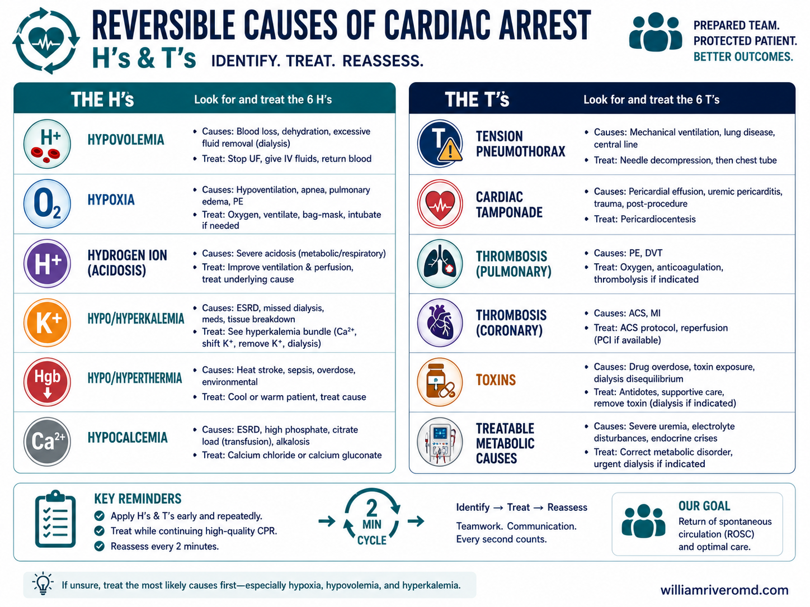
The reversible causes — the H's and T's — with the ones over-represented in dialysis (hyperkalemia, hypovolemia, air embolism) flagged as high-yield.
The H's (high yield here)
Ang H's (mahalaga dito)
Ang H's (importante dinhi)
Ing H's (mahalaga keni)
Hyper/hypokalemia (treat empirically) · Hypovolemia (over-ultrafiltration — give saline) · Hydrogen ion / acidosis · Hypoxia · Hypothermia (cool dialysate, blood loss) · Hypocalcemia/hypomagnesemia.
Hyper/hypokalemia (gamutin agad) · Hypovolemia (sobrang ultrafiltration — magbigay ng saline) · Hydrogen ion / acidosis · Hypoxia · Hypothermia · Hypocalcemia/hypomagnesemia.
Hyper/hypokalemia (tambali dayon) · Hypovolemia (sobra nga ultrafiltration — paghatag og saline) · Hydrogen ion / acidosis · Hypoxia · Hypothermia · Hypocalcemia/hypomagnesemia.
Hyper/hypokalemia (lunasan agad) · Hypovolemia (sobrang ultrafiltration — magbie ning saline) · Hydrogen ion / acidosis · Hypoxia · Hypothermia · Hypocalcemia/hypomagnesemia.
The T's (with dialysis twists)
Ang T's (may dialysis twist)
Ang T's (adunay dialysis twist)
Ing T's (atin dialysis twist)
Thrombosis (MI; pulmonary embolism) · Air embolism (circuit disconnection — clamp venous line, left lateral Trendelenburg / Durant maneuver) · Tamponade (uremic pericarditis) · Tension pneumothorax (recent catheter placement) · Toxins (drug accumulation; dialyzer reaction).
Thrombosis (MI; pulmonary embolism) · Air embolism (disconnection ng circuit — i-clamp ang venous line, left lateral Trendelenburg / Durant maneuver) · Tamponade (uremic pericarditis) · Tension pneumothorax (bagong catheter) · Toxins (drug accumulation; dialyzer reaction).
Thrombosis (MI; pulmonary embolism) · Air embolism (pagkaputol sa circuit — i-clamp ang venous line, left lateral Trendelenburg / Durant maneuver) · Tamponade (uremic pericarditis) · Tension pneumothorax (bag-ong catheter) · Toxins (drug accumulation; dialyzer reaction).
Thrombosis (MI; pulmonary embolism) · Air embolism (pamangaputul ning circuit — i-clamp ing venous line, left lateral Trendelenburg / Durant maneuver) · Tamponade (uremic pericarditis) · Tension pneumothorax (bayung catheter) · Toxins (drug accumulation; dialyzer reaction).
Who Does What — and How They Talk
Sino ang Gumagawa ng Ano — at Paano Sila Nag-uusap
Kinsa ang Mobuhat sa Unsa — ug Unsaon Sila Pagsulti
Ninu ing Gagawa ning Nanu — at Makananu la Mamagsalita
A small team works only if roles are explicit. In a six-chair unit, three to five responders can run a textbook code if each owns a lane and the leader keeps the room calm and verbal.
Gumagana lang ang maliit na team kung malinaw ang tungkulin. Sa six-chair unit, tatlo hanggang limang responder ang makakapagpatakbo ng textbook code kung may sariling lane ang bawat isa at pinapanatiling kalmado at verbal ng leader ang silid.
Molihok lang ang gamay nga team kung klaro ang tahas. Sa six-chair unit, tulo hangtod lima ka responder makapadagan og textbook code kung matag usa adunay kaugalingong lane ug ang leader maghupot sa lawak nga kalma ug verbal.
Tatakbu mu ing malating team nung malinaw ing tungkulin. King six-chair unit, atlu anggang limang responder ing makapagpatakbu ning textbook code nung atin sariling lane ing balang metung at ingatan a kalmadu at verbal ning leader ing kuartu.
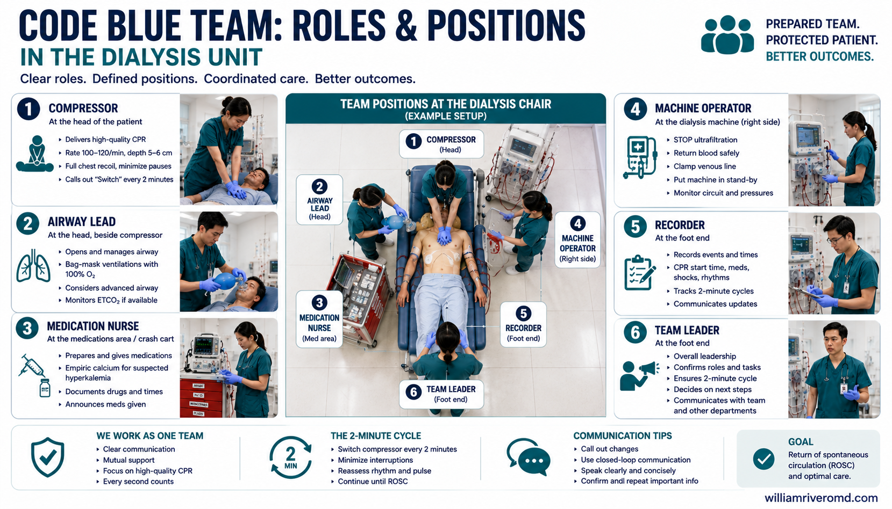
Where each role stands around the dialysis chair — team leader, two compressors, airway, medication/circuit nurse, recorder/timer, and runner — coordinated by closed-loop communication.
Team leader
Team leader
Team leader
Team leader
Stands at the foot, hands-off, directs the algorithm, calls drugs and shocks, and tracks the H's and T's.
Nasa paanan, hindi humahawak, nagdidirekta ng algorithm, tumatawag ng gamot at shock, at sinusubaybayan ang H's at T's.
Naa sa tiilan, dili mokupot, magdirekta sa algorithm, motawag og tambal ug shock, ug mosubay sa H's ug T's.
Atyu king bitis, ali kakatnan, magdirekta ning algorithm, tatawag ning gamut at shock, at susubaybayan ing H's at T's.
Compressors (×2)
Compressors (×2)
Compressors (×2)
Compressors (×2)
Deliver high-quality compressions and rotate every 2 minutes to prevent fatigue.
Nagbibigay ng high-quality compressions at nagpapalitan kada 2 minuto para maiwasan ang pagod.
Mohatag og high-quality compressions ug mag-ilis kada 2 minuto aron malikayan ang kapoy.
Magbie ning high-quality compressions at magsalili kada 2 minuto para mailako ing pagal.
Airway
Airway
Airway
Airway
Manages BVM and oxygen, suction, and (if trained) advanced airway; reports chest rise.
Nag-aasikaso ng BVM at oxygen, suction, at (kung sanay) advanced airway; nag-uulat ng chest rise.
Mo-atiman sa BVM ug oxygen, suction, ug (kung bansay) advanced airway; mo-report sa chest rise.
Mag-asikaso ning BVM at oxygen, suction, at (nung sanay) advanced airway; mag-ulat ning chest rise.
Meds / circuit nurse
Meds / circuit nurse
Meds / circuit nurse
Meds / circuit nurse
Stops UF, secures access, draws and pushes drugs, and prepares emergency dialysis.
Itinitigil ang UF, sinisigurado ang access, naghahanda at nagtutulak ng gamot, at naghahanda ng emergency dialysis.
Mohunong sa UF, mosiguro sa access, mag-andam ug motulod og tambal, ug mag-andam og emergency dialysis.
Patugtan ing UF, sigurduhan ing access, maghanda at magtulak ning gamut, at maghanda ning emergency dialysis.
Recorder / timer
Recorder / timer
Recorder / timer
Recorder / timer
Logs times, drugs, shocks, and rhythm checks; announces the 2-minute marks out loud.
Itinatala ang oras, gamot, shock, at rhythm check; ipinapahayag nang malakas ang 2-minutong marka.
Mo-log sa oras, tambal, shock, ug rhythm check; mo-anunsyo og kusog sa 2-minuto nga marka.
Itala ing oras, gamut, shock, at rhythm check; ipahayag a masikan ing 2-minutong marka.
Runner / family liaison
Runner / family liaison
Runner / family liaison
Runner / family liaison
Fetches supplies, calls the physician/EMS, manages other patients, and updates family.
Kinukuha ang supplies, tumatawag sa doktor/EMS, inaasikaso ang ibang pasyente, at ina-update ang pamilya.
Mokuha sa supplies, motawag sa doktor/EMS, mo-atiman sa ubang pasyente, ug mo-update sa pamilya.
Kukunan ing supplies, tatawag king doktor/EMS, asikasuan ing aliwang pasyente, at i-update ing pamilya.
Closed-loop communication keeps the code efficient
Pinananatiling episyente ng closed-loop communication ang code
Ang closed-loop communication maghupot sa code nga episyente
Ing closed-loop communication ya ingatan a episyente ing code
Every order is directed to a named person, repeated back, and confirmed when done: "Maria, 1 mg epinephrine IV now." — "1 mg epinephrine IV." — "Epinephrine in, 14:03." This single habit eliminates missed and duplicated drugs and keeps the recorder accurate.
Bawat utos ay nakadirekta sa pinangalanang tao, inuulit, at kinukumpirma kapag tapos: "Maria, 1 mg epinephrine IV ngayon." — "1 mg epinephrine IV." — "Pasok na ang epinephrine, 14:03." Inaalis ng ugaling ito ang nakaligtaan at dobleng gamot at pinananatiling tama ang recorder.
Matag mando gitumong sa pinanganlan nga tawo, gibalik-balik, ug gikumpirma kung human: "Maria, 1 mg epinephrine IV karon." — "1 mg epinephrine IV." — "Sulod na ang epinephrine, 14:03." Kining batasan mowala sa nalimtan ug doble nga tambal ug maghupot nga sakto sa recorder.
Balang utus ya nakadirekta king pinanyalan a tau, uulitan, at kukumpirman nung yari: "Maria, 1 mg epinephrine IV ngeni." — "1 mg epinephrine IV." — "Lulub na ing epinephrine, 14:03." Ing ugaling iti ya mialis king nakalingwan at doble a gamut at ingatan a tama ing recorder.
Post-Resuscitation Care and the Debrief
Pangangalaga Pagkatapos ng Resuscitation at ang Debrief
Pag-atiman Human sa Resuscitation ug ang Debrief
Pamag-ingat Kayari ning Resuscitation at ing Debrief
ROSC is the start of critical care, not the end of the emergency. The dialysis unit is a stabilization and transfer point, not an ICU.
Ang ROSC ay simula ng critical care, hindi katapusan ng emergency. Ang dialysis unit ay lugar ng stabilization at transfer, hindi ICU.
Ang ROSC mao ang sinugdanan sa critical care, dili katapusan sa emergency. Ang dialysis unit usa ka lugar sa stabilization ug transfer, dili ICU.
Ing ROSC ya umpisa ning critical care, ali katapusan ning emergency. Ing dialysis unit ya lugar ning stabilization at transfer, ali ICU.
Immediate post-ROSC bundle
Immediate post-ROSC bundle
Immediate post-ROSC bundle
Immediate post-ROSC bundle
- Secure airway and oxygenation; target normal SpO₂ and avoid hyperventilation
- Sigurahin ang airway at oxygenation; target normal SpO₂ at iwasan ang hyperventilation
- Siguroha ang airway ug oxygenation; target normal SpO₂ ug likayi ang hyperventilation
- Sigurduhan ing airway at oxygenation; target normal SpO₂ at ilako ing hyperventilation
- Support blood pressure; treat hypotension with fluids/vasopressors as needed
- Suportahan ang blood pressure; gamutin ang hypotension gamit ang fluids/vasopressors kung kailangan
- Suportahi ang blood pressure; tambali ang hypotension gamit ang fluids/vasopressors kung gikinahanglan
- Suportan ing blood pressure; lunasan ing hypotension gamit ing fluids/vasopressors nung kailangan
- 12-lead ECG and point-of-care labs (K⁺, glucose, ABG/VBG, calcium)
- 12-lead ECG at point-of-care labs (K⁺, glucose, ABG/VBG, calcium)
- 12-lead ECG ug point-of-care labs (K⁺, glucose, ABG/VBG, calcium)
- 12-lead ECG at point-of-care labs (K⁺, glucose, ABG/VBG, calcium)
- Treat the identified cause — continue hyperkalemia management / arrange dialysis
- Gamutin ang natukoy na sanhi — ituloy ang hyperkalemia management / ayusin ang dialysis
- Tambali ang nailhan nga hinungdan — ipadayon ang hyperkalemia management / ayuha ang dialysis
- Lunasan ing nakilalang sanhi — ituluy ing hyperkalemia management / ayusan ing dialysis
- Activate EMS / hospital transfer to ICU with full documentation
- I-activate ang EMS / transfer sa ospital papuntang ICU na may kumpletong dokumentasyon
- I-activate ang EMS / transfer sa ospital padulong ICU nga adunay kompleto nga dokumentasyon
- I-activate ing EMS / transfer king ospital papuntang ICU a atin kumpletong dokumentasyon
- Update family compassionately; designate one staff member to communicate
- I-update ang pamilya nang may malasakit; magtalaga ng isang staff na makikipag-usap
- I-update ang pamilya nga may kalooy; magtudlo og usa ka staff nga makigsulti
- I-update ing pamilya a atin lugud; magtalaga kang metung a staff a makipag-usap
Always debrief — it is how the next code gets faster
Laging mag-debrief — dito bumibilis ang susunod na code
Kanunay mag-debrief — niini mopaspas ang sunod nga code
Pirmi mag-debrief — keni bibilis ing tutuking code
Within 24–48 hours, gather the team for a blameless debrief: what went well, what was delayed, was the cart complete, did roles work, was communication clear. Fix one or two concrete things before the next shift. Restock and re-seal the crash cart immediately, and offer staff emotional support — codes are hard on the people who run them.
Sa loob ng 24–48 oras, tipunin ang team para sa blameless debrief: ano ang naging maayos, ano ang naantala, kumpleto ba ang cart, gumana ba ang mga tungkulin, malinaw ba ang komunikasyon. Ayusin ang isa o dalawang konkretong bagay bago ang susunod na shift. Mag-restock at i-seal agad ang crash cart, at mag-alok ng emotional support sa staff — mahirap ang code sa mga tao na nagpapatakbo nito.
Sulod sa 24–48 oras, tigoma ang team para sa blameless debrief: unsa ang nindot, unsa ang nalangan, kompleto ba ang cart, milihok ba ang mga tahas, klaro ba ang komunikasyon. Ayuha ang usa o duha ka konkreto nga butang sa wala pa ang sunod nga shift. Pag-restock ug i-seal dayon ang crash cart, ug paghatag og emotional support sa staff — lisod ang code sa mga tawo nga nagpadagan niini.
King loob ning 24–48 oras, tipunan ing team para king blameless debrief: nanu ing miging maus, nanu ing naantala, kumpletu ya ing cart, tinakbu la ing deng tungkulin, malinaw ya ing komunikasyon. Ayusan ing metung o adwang konkretong bage bayu ing tutuking shift. Mag-restock at i-seal agad ing crash cart, at mag-alok ning emotional support king staff — masakit ya ing code king deng taung magpatakbu kaniti.
One-Page Dialysis Unit Code Blue Protocol
Isang-Pahinang Dialysis Unit Code Blue Protocol
Usa ka Pahina nga Dialysis Unit Code Blue Protocol
Metung-Pahinang Dialysis Unit Code Blue Protocol
Print this, laminate it, and post it at every nurses' station and beside the crash cart. It is the spine of an efficient code.
I-print ito, i-laminate, at idikit sa bawat nurses' station at tabi ng crash cart. Ito ang gulugod ng episyenteng code.
I-print kini, i-laminate, ug ibutang sa matag nurses' station ug tapad sa crash cart. Kini ang bukog sa episyente nga code.
I-print ya iti, i-laminate, at idikit king balang nurses' station at siping ning crash cart. Iti ing gulugud ning episyente a code.
DIALYSIS CODE BLUE — fast sequence
DIALYSIS CODE BLUE — mabilis na sunod-sunod
DIALYSIS CODE BLUE — paspas nga sunod-sunod
DIALYSIS CODE BLUE — mabilis a sunud-sunud
- Confirm unresponsive + no pulse (≤10 s) → CALL THE CODE, state chair number, send for cart + defibrillator, note the time
- Kumpirmahin na walang malay + walang pulso (≤10 s) → TAWAGIN ANG CODE, sabihin ang numero ng chair, ipakuha ang cart + defibrillator, itala ang oras
- Kumpirmaha nga walay panimuot + walay pulso (≤10 s) → TAWGA ANG CODE, isulti ang numero sa chair, ipakuha ang cart + defibrillator, itala ang oras
- Kumpirman a alang malay + alang pulso (≤10 s) → TAWAGAN ING CODE, sabian ing numeru ning chair, ipakua ing cart + defibrillator, itala ing oras
- START COMPRESSIONS 100–120/min, depth 5–6 cm, full recoil, swap q2 min
- SIMULAN ANG COMPRESSIONS 100–120/min, lalim 5–6 cm, full recoil, palit q2 min
- SUGDI ANG COMPRESSIONS 100–120/min, giladmon 5–6 cm, full recoil, ilis q2 min
- UMPISAN ING COMPRESSIONS 100–120/min, lalam 5–6 cm, full recoil, salili q2 min
- CIRCUIT: stop UF → saline bolus → return blood or clamp & disconnect → KEEP ACCESS for drugs
- CIRCUIT: itigil ang UF → saline bolus → i-return ang dugo o i-clamp at i-disconnect → PANATILIHIN ANG ACCESS para sa gamot
- CIRCUIT: hunonga ang UF → saline bolus → i-return ang dugo o i-clamp ug i-disconnect → AMPINGI ANG ACCESS para sa tambal
- CIRCUIT: patugtan ing UF → saline bolus → i-return ing daya o i-clamp at i-disconnect → INGATAN ING ACCESS para king gamut
- ATTACH DEFIBRILLATOR → analyze → shock if VF/pVT (clear of circuit & metal) → resume CPR at once
- IKABIT ANG DEFIBRILLATOR → suriin → mag-shock kung VF/pVT (malayo sa circuit at metal) → ituloy agad ang CPR
- IKABIT ANG DEFIBRILLATOR → susiha → mag-shock kung VF/pVT (layo sa circuit ug metal) → ipadayon dayon ang CPR
- IKABIT ING DEFIBRILLATOR → suriin → mag-shock nung VF/pVT (marayu king circuit at metal) → ituluy agad ing CPR
- DRUGS: epinephrine 1 mg q3–5 min · amiodarone 300 mg (then 150 mg) for refractory VF/pVT
- GAMOT: epinephrine 1 mg q3–5 min · amiodarone 300 mg (tapos 150 mg) para sa refractory VF/pVT
- TAMBAL: epinephrine 1 mg q3–5 min · amiodarone 300 mg (dayon 150 mg) para sa refractory VF/pVT
- GAMUT: epinephrine 1 mg q3–5 min · amiodarone 300 mg (tapos 150 mg) para king refractory VF/pVT
- THINK HYPERKALEMIA EARLY: calcium gluconate 1–2 g IV (or CaCl₂ 1 g) now → insulin 10 U + D50 → salbutamol neb → ± bicarbonate → EMERGENCY DIALYSIS (low-K bath)
- ISIPING AGAD ANG HYPERKALEMIA: calcium gluconate 1–2 g IV (or CaCl₂ 1 g) ngayon → insulin 10 U + D50 → salbutamol neb → ± bicarbonate → EMERGENCY DIALYSIS (low-K bath)
- HUNAHUNAA DAYON ANG HYPERKALEMIA: calcium gluconate 1–2 g IV (or CaCl₂ 1 g) karon → insulin 10 U + D50 → salbutamol neb → ± bicarbonate → EMERGENCY DIALYSIS (low-K bath)
- ISIPAN AGAD ING HYPERKALEMIA: calcium gluconate 1–2 g IV (or CaCl₂ 1 g) ngeni → insulin 10 U + D50 → salbutamol neb → ± bicarbonate → EMERGENCY DIALYSIS (low-K bath)
- CYCLE every 2 min: rhythm/pulse check, swap compressor, run the H's & T's (don't forget AIR EMBOLISM)
- SIKLO kada 2 min: tsek ng ritmo/pulso, palit ng compressor, daanan ang H's at T's (huwag kalimutan ang AIR EMBOLISM)
- SIKLO kada 2 min: check sa ritmo/pulso, ilis sa compressor, agi-a ang H's ug T's (ayaw kalimti ang AIR EMBOLISM)
- SIKLO kada 2 min: tselek ning ritmo/pulso, salili ning compressor, daranan ing H's at T's (eka kalingwan ing AIR EMBOLISM)
- ROSC → airway, BP, 12-lead ECG, labs, treat cause, EMS transfer to ICU, update family
- ROSC → airway, BP, 12-lead ECG, labs, gamutin ang sanhi, EMS transfer sa ICU, i-update ang pamilya
- ROSC → airway, BP, 12-lead ECG, labs, tambali ang hinungdan, EMS transfer sa ICU, i-update ang pamilya
- ROSC → airway, BP, 12-lead ECG, labs, lunasan ing sanhi, EMS transfer king ICU, i-update ing pamilya
- AFTER: restock + re-seal cart · complete the code sheet · schedule a blameless debrief
- PAGKATAPOS: mag-restock + i-seal ang cart · kumpletuhin ang code sheet · mag-iskedyul ng blameless debrief
- HUMAN: pag-restock + i-seal ang cart · kompletoha ang code sheet · pag-iskedyul og blameless debrief
- KAYARI: mag-restock + i-seal ing cart · kumpletuhin ing code sheet · mag-iskedyul ning blameless debrief
The Code Blue Recording Flowsheet
Ang Code Blue Recording Flowsheet
Ang Code Blue Recording Flowsheet
Ing Code Blue Recording Flowsheet
A dedicated recorder with a structured flowsheet is what turns a chaotic code into a documented, reviewable event — capturing every rhythm check, shock, and drug to the minute. Below is the unit's recording flowsheet; the recorder fills one timed row per intervention, then completes the event-conclusion and personnel block at the end. The downloadable PDF also includes quick-reference ACLS management algorithms — cardiac arrest (VF/pVT and asystole/PEA), bradycardia and tachycardia with a pulse, and hyperkalemic arrest in dialysis.
Ang nakatalagang recorder na may maayos na flowsheet ang nagpapalit ng magulong code tungo sa nadokumento at masusuring pangyayari — naitatala ang bawat rhythm check, shock, at gamot kada minuto. Nasa ibaba ang recording flowsheet ng unit; pinupunan ng recorder ang isang naka-tiyempong row kada interbensyon, pagkatapos ay kinukumpleto ang event-conclusion at personnel block sa dulo. May naka-print na two-sided PDF na pwedeng i-download.
Ang gitudlo nga recorder nga adunay han-ay nga flowsheet mao ang mag-usab sa magubot nga code ngadto sa dokumentado ug ma-review nga panghitabo — makuha ang matag rhythm check, shock, ug tambal kada minuto. Sa ubos mao ang recording flowsheet sa unit; pun-an sa recorder ang usa ka timed nga row kada interbensyon, dayon kompletohon ang event-conclusion ug personnel block sa katapusan. Adunay printable nga two-sided PDF nga ma-download.
Ing nakatalagang recorder a atin maus a flowsheet ing magpalit king magulu a code papunta king nadokumento at masusuring pangyari — makukua ing balang rhythm check, shock, at gamut kada minutu. Atyu king lalam ing recording flowsheet ning unit; pupunan ning recorder ing metung a naka-tiyempong row kada interbensyon, kayari kukumpletuhin ing event-conclusion at personnel block king tauli. Atin naka-print a two-sided PDF a pwedeng i-download.
Download PDF — Code Blue Recording Flowsheet + ACLS AlgorithmsI-download ang PDF — Code Blue Recording Flowsheet + ACLS AlgorithmsI-download ang PDF — Code Blue Recording Flowsheet + ACLS AlgorithmsI-download ing PDF — Code Blue Recording Flowsheet + ACLS Algorithms| Time | BP | HR | Rhythm | O₂ | Pulse | CPR | Shock | EPI | AMIO | LIDO | ADEN | ATRO | Ca gluc | NaHCO₃ | Comments |
|---|---|---|---|---|---|---|---|---|---|---|---|---|---|---|---|
Event conclusion
Event conclusion
Event conclusion
Event conclusion
Time event ended: ____ · Patient outcome: ☐ ROSC achieved ☐ Expired / efforts terminated · Reason ended: ☐ ROSC ☐ No benefit to continue · Family notification: ☐ At bedside ☐ By phone ☐ Unable to reach ☐ No family ☐ Pending · Name notified / relationship: ____
Personnel on duty
Personnel on duty
Personnel on duty
Personnel on duty
Primary Nurse · Charge Nurse · Recorder · CPR Staff · Medication Staff · Respiratory Therapist · Resident on Duty (ROD) · Physician · On-Call Nephrologist.
Adapted from the Renal Care Unit (Rafael C. Lazatin Memorial Medical Center) Code Blue Recording Flowsheet v2. Use alongside your institution's official policy and current AHA/ACLS guidelines.
Hango sa Renal Care Unit (Rafael C. Lazatin Memorial Medical Center) Code Blue Recording Flowsheet v2. Gamitin kasabay ng opisyal na patakaran ng inyong institusyon at kasalukuyang AHA/ACLS guidelines.
Gikan sa Renal Care Unit (Rafael C. Lazatin Memorial Medical Center) Code Blue Recording Flowsheet v2. Gamita kauban sa opisyal nga palisiya sa inyong institusyon ug kasamtangan nga AHA/ACLS guidelines.
Manibat king Renal Care Unit (Rafael C. Lazatin Memorial Medical Center) Code Blue Recording Flowsheet v2. Gamitan kayabe ning opisyal a patakaran ning kekayung institusyon at kasalukuyan a AHA/ACLS guidelines.
2025 AHA Resuscitation Algorithms — Quick Reference
Mga 2025 AHA Resuscitation Algorithm — Mabilisang Sanggunian
Mga 2025 AHA Resuscitation Algorithm — Paspas nga Reperensya
Deng 2025 AHA Resuscitation Algorithm — Maganang Sanggunian
Print-ready 2025 AHA algorithm cards for the crash cart and nurses' station. The dialysis-specific code-blue card sits alongside the standard adult ACLS, airway, and opioid-emergency algorithms. The complete set — including pediatric BLS and PALS — lives in the nephrology visual atlas under "Resuscitation & Emergencies."
Mga nakahandang i-print na 2025 AHA algorithm card para sa crash cart at nurses' station. Ang dialysis-specific na code-blue card ay katabi ng standard adult ACLS, airway, at opioid-emergency algorithms. Ang kumpletong set — kasama ang pediatric BLS at PALS — ay nasa nephrology visual atlas sa ilalim ng "Resuscitation & Emergencies."
Mga andam i-print nga 2025 AHA algorithm card para sa crash cart ug nurses' station. Ang dialysis-specific nga code-blue card kauban sa standard adult ACLS, airway, ug opioid-emergency algorithms. Ang kompleto nga set — lakip ang pediatric BLS ug PALS — anaa sa nephrology visual atlas ubos sa "Resuscitation & Emergencies."
Deng nakahanda nang i-print a 2025 AHA algorithm card para king crash cart at nurses' station. Ing dialysis-specific a code-blue card ya katabi ning standard adult ACLS, airway, at opioid-emergency algorithms. Ing kumpletung set — kayabe ing pediatric BLS at PALS — atyu king nephrology visual atlas king lalam ning "Resuscitation & Emergencies."
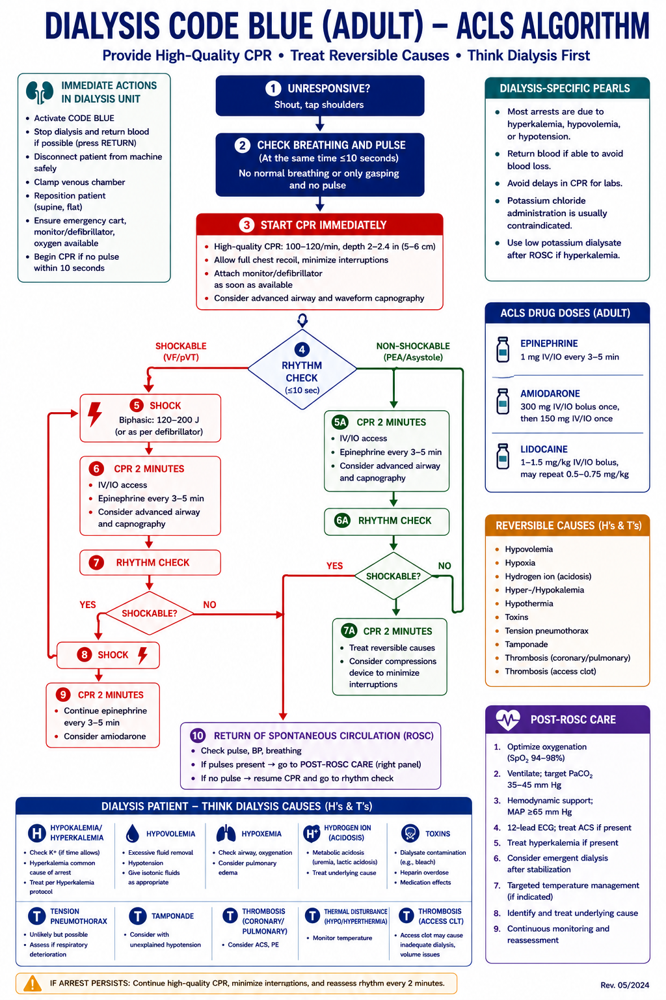
Dialysis-unit code blue: stop UF and return blood (or clamp for air/contamination), empiric calcium + hyperkalemia bundle, Durant maneuver for air embolism, defibrillate disconnected unless IEC-proof.
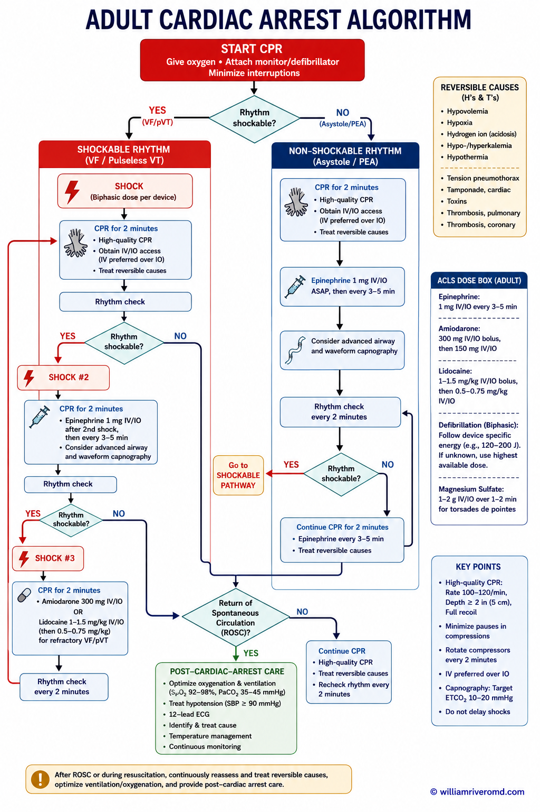
Adult cardiac arrest: shockable vs non-shockable, epinephrine 1 mg q3–5 min, amiodarone 300→150 mg; 2025 prefers IV over IO; treat reversible causes.
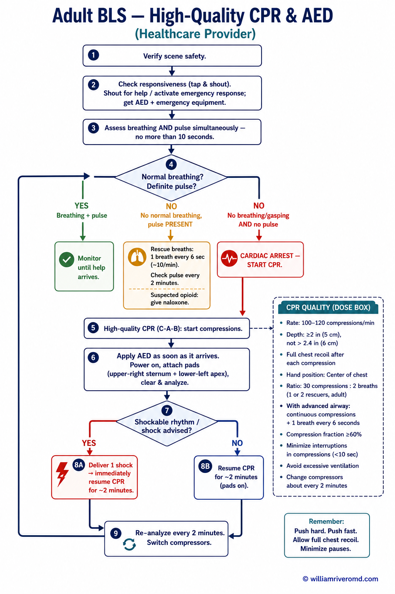
Adult BLS: high-quality CPR (100–120/min, ≥2 in, 30:2) and early AED; naloxone for suspected opioid emergencies.
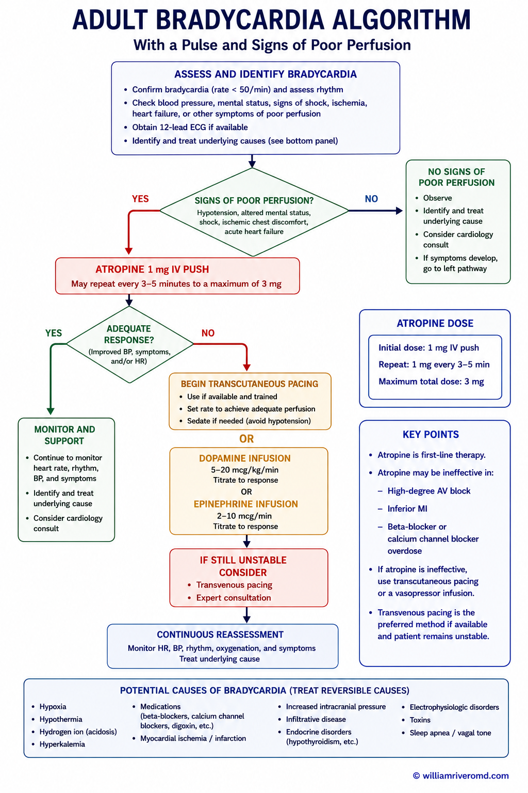
Adult bradycardia: atropine 1 mg q3–5 min (max 3 mg) → pacing and/or dopamine or epinephrine infusion if unstable.
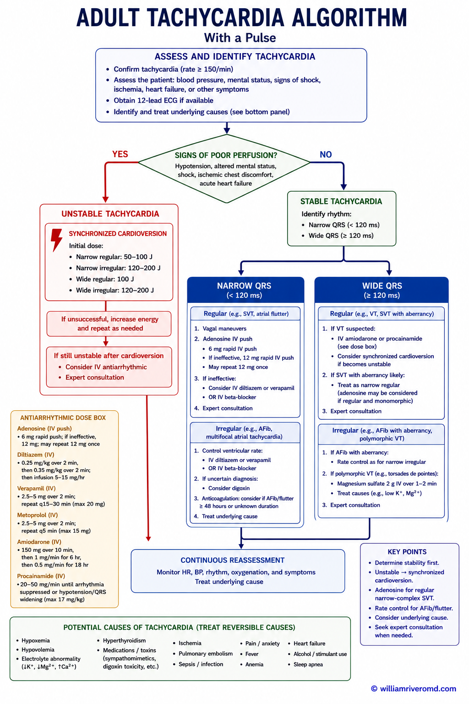
Adult tachycardia: unstable → synchronized cardioversion (device-specific/max energy); stable → narrow vs wide pathways, adenosine 6→12 mg.
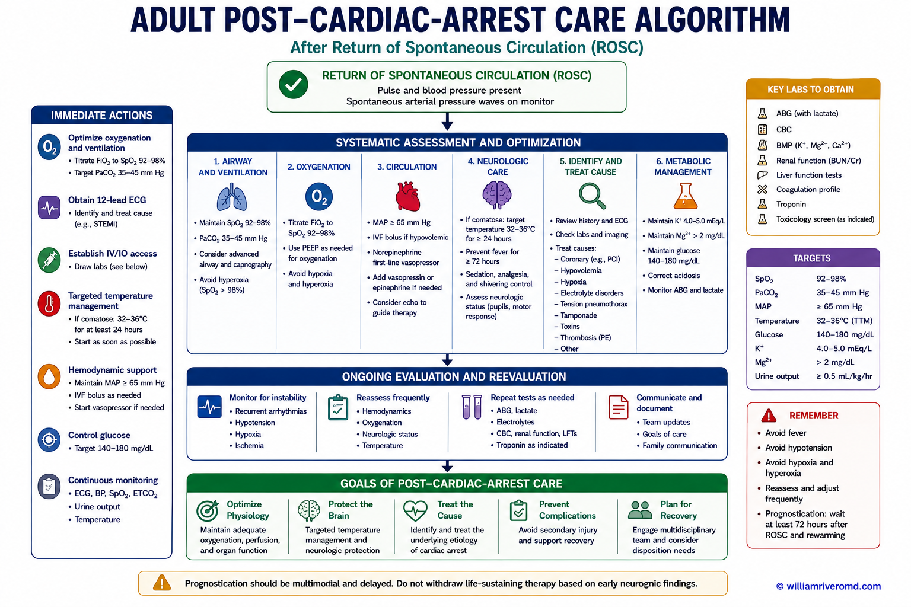
Post-ROSC care: SpO₂ 90–98%, PaCO₂ 35–45, MAP ≥65; PCI if STEMI; temperature control 32–37.5°C; multimodal neuroprognostication.
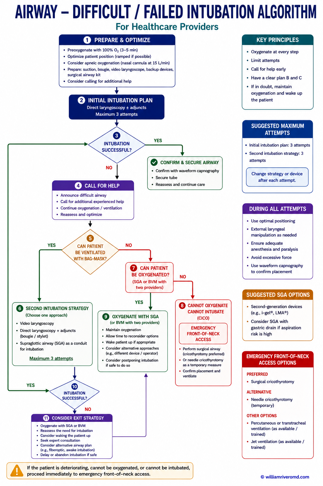
Difficult / failed intubation (DAS Plans A–D): optimise → supraglottic airway → facemask → CICO → scalpel cricothyroidotomy.
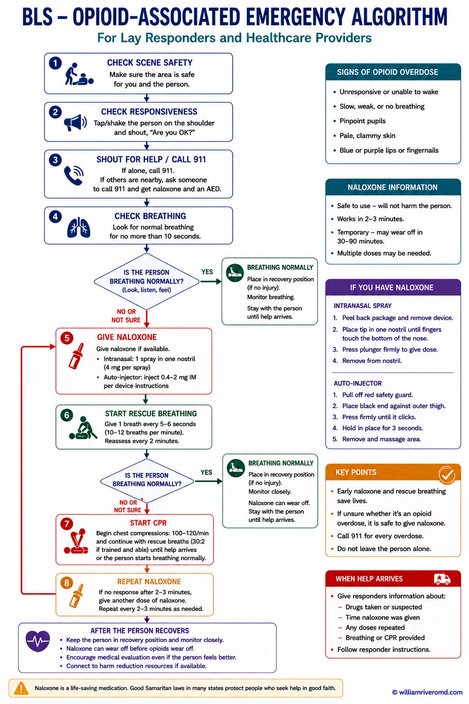
Opioid emergency: naloxone 4 mg IN / 0.4 mg IM (repeat q2–4 min) with rescue breaths or CPR — naloxone is an adjunct, not a substitute for CPR.
Educational quick-reference adapted from the 2025 AHA Guidelines for CPR & ECC (difficult-airway figure per DAS 2015 / ASA 2022). Confirm doses against your institution's protocol and the primary guidelines before clinical use.
Pang-edukasyong mabilisang sanggunian batay sa 2025 AHA Guidelines for CPR & ECC (difficult-airway figure ayon sa DAS 2015 / ASA 2022). Tiyakin ang doses laban sa protocol ng inyong institusyon at sa primary guidelines bago gamitin sa pasyente.
Edukasyonal nga paspas nga reperensya base sa 2025 AHA Guidelines for CPR & ECC (difficult-airway figure subay sa DAS 2015 / ASA 2022). Siguroha ang doses batok sa protocol sa inyong institusyon ug sa primary guidelines una gamiton sa pasyente.
Pang-edukasyon a maganang sanggunian base king 2025 AHA Guidelines for CPR & ECC (difficult-airway figure agpang king DAS 2015 / ASA 2022). Tiyakan ing doses laban king protocol ning kekayung institusyon at king primary guidelines bayu gamitan king pasyente.